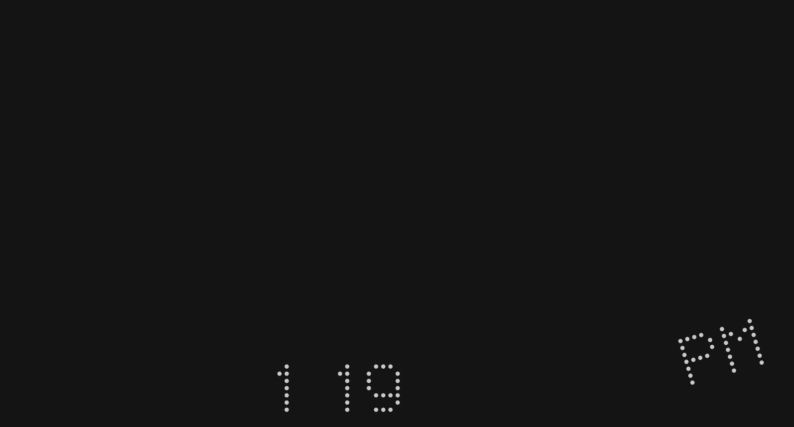
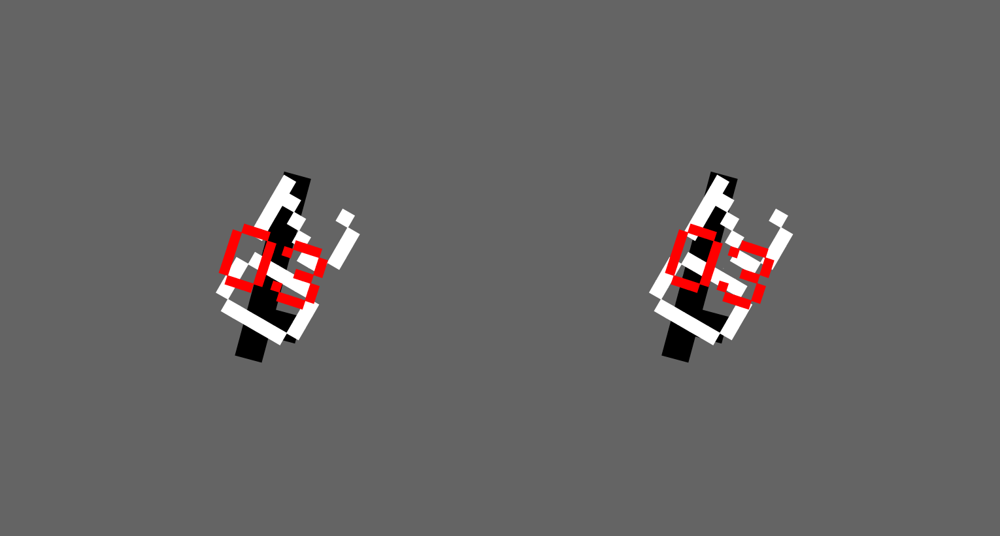
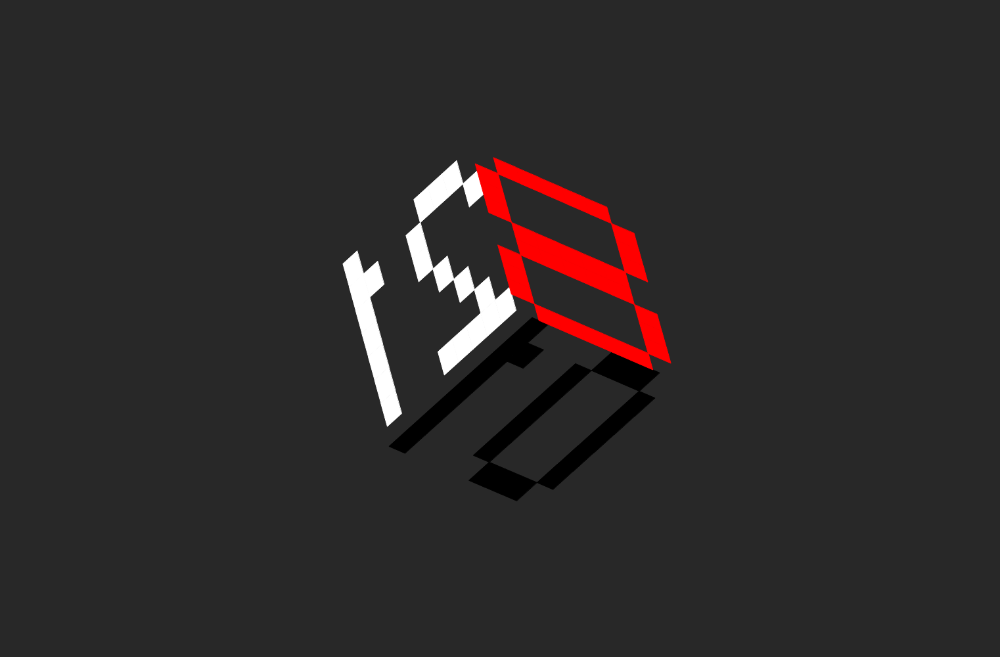

Recreating the Past
SFPC - Fall 2021
Week 1: Vera Molnar
Structure à Partir de la Lettre U/CAcrylic on canvas, 2020
original
reproduction

 live sketch
code
live sketch
code
Week 2: John Whitney
Excerpt from: Matrix (1971)live sketch code
Week 3: John Maeda
12 o'clocks, 1996  live sketch code